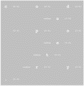

|
Editor’s Introduction: Writing.3D
Rita Raley
alternate format - Editor's Introduction: Writing. 3D .pdf
For a sickening moment he tried to retain his old up-and-down orientation, his body attempting to right itself, searching for the gravity that wasn’t there. Then he forced himself to change his view. He was hurtling toward a wall. That was down. And at once he had control of himself.
– Orson Scott Card, Ender’s Game
How do we read a text that removes the stabilizing spatial coordinates of the page and no longer maintains a top-centric and left-centric orientation? How do we read texts that do not simply simulate dimension but in fact materialize and operate on the z-axis? Here, Ender’s Game is suggestive: what Ender Wiggin has to learn about the null-gravity Battle Room is that it requires a fundamental reorientation of spatial perspective. Indeed, the players’ successful navigation and battle victories depend on their capacity to adapt to a space with a different spatial logic. So, too, a three-dimensional text – whether it be presented in the immersive reading environment of a Cave, a game space, a QuickTime video, or a Javascript poem – requires an adaptive flexibility that we might even call a new mode of reading, a “deep reading.”
My thinking about the theme of this issue – Writing.3D – did not begin with a consideration of video installations or gaming spaces, as one would perhaps initially expect, but with a consideration of a set of works that gestured toward the realization of three dimensions within the space of a poetic text. In David Knoebel’s Java series, Click Poetry: Words in Space (2001), for example, “Oh” creates the illusion of sphericality; the words in “Walkdont” spin on the subsidiary axes of an invisible mobile; and “A Fine View” reproduces the cinematic illusion of 3D by miming the roll-out of the prologue to Star Wars. Ted Warnell’s “Codepoetry” brings the suggestion of depth and three dimensionality to the fore with its intricate embedding of a symbolic z-axis within the work. The frame of the visual poem appears as the single face of a cube, each letter of the words “code poetry” laid out along invisible gridlines and marked with a coordinate. Not only do the letters themselves take the form of a “z,” but graphing the coordinates themselves reveals the form of another “z.”[1]
In this special issue of TIR Web we will see a collection of texts in which three dimensionality is suggested and some in which it is actually realized. We will also see different formal strategies for establishing focal points and textual sequences, for helping the reader to orient herself to the interface. In Knoebel’s “Heart Pole,” for example, the word “breathe” is the stabilizing “pole” that remains perpendicularly linked to the primary block of text. Readers of Aya Karpinksa’s “mar puro” click on the different phrases to pull them into the foreground and re-center the text. Even with the presence of these stabilizing elements, the question before us is this: how do we approach and critically assess reading interfaces that abandon the spatial assumptions of codex? Espen Aarseth, Katherine Hayles and others have articulated the need to develop critical practices and semiotics particular to the technological substrate of the text. It follows, then, that we now also have a need for aesthetic and critical frameworks for text-based virtual environments and to account for reading in different multi-dimensional spaces. There is by now a rich critical tradition of reading spaces in a different sense: reading structures in terms of rhetoric and “archisemiotics,” seeing meaning and significance in spatial design (Mike Davis, Fredric Jameson). However, what is now required is a different kind of exploration of the spatial properties of texts. The unit of poetic analysis has shrunk from line to word to letter and now we have need of another unit: the three-dimensional projecting plane.
Earlier issues of TIR Web have featured Screen, a Cave project executed by Noah Wardrip-Fruin, Robert Coover, and a design/build team at Brown University. To recap: the first reading space within this work resembles that of print or, more precisely, that of the wall poster. It is “traditional, paper-style reading” and the static, conventionally rendered paragraphs invite slow reading and quiet contemplation. Then there is a pronounced ripping sound and individual words begin to peel off the walls and swarm about at an increasingly rapid pace. Perhaps drawing on the corresponding cinematic genre, the transition into 3D space is designed to surprise. It disrupts the reading experience to which we have been habituated, as do the sharp sounds of the spoken words as they tear away from the walls. Thus, the text of Screen is fixed initially in the mode of a linear book; as the work progresses, the words become literal 3D objects, sculptural and volumetric. This is three dimensionality that plays off of the traditional two dimensionality of printed text, spatial fluidity that plays off of the fixed point of view in traditional print-based space. We might think as well of projects such as the Magic Book, which retains the page as the unit of textual presentation; readers wearing head-mounted displays see three-dimensional animated scenes “pop off the page and come to life.”
Screen is also an instance of what Wardrip-Fruin terms “playable media”: the user can not only touch words with the data glove but also bat them back onto the wall, somewhat like a semantic version of Pong. Wardrip-Fruin and the team speak of three components or levels of reading in the piece: reading conventionally; reading of the individual words as they peel off the wall and swarm about the user; and reading of the reformulated text once the words are hit back onto the wall. These words, however, are not isolate or sealed off from the rest of the text once they begin to swarm about. In fact, there is a fourth type of reading: along the z-axis. That is, the user does not simply read the words as they circle around her but she also reads through and behind them to the text on the walls. In other words, it is deep reading in this other sense: reading volumetrically, reading surface to depth and back again. Playable text had earlier been achieved by interactive video installation – Tom White and David Small’s Stream of Consciousness (1998) and Camille Utterback and Romy Achituv’s Text Rain (1999) – but in the Cave environment, raining, or swarming, text becomes truly volumetric.
The medium and writing techniques inform the thematic content of Screen. Robert Coover’s prologue, transmitted by positional sound, links the virtual space of the project to the virtual space of memory. The theme of memory – “reading as memory” – has partly to do with the fact that memory, like the letter, can be destroyed; each depends upon the other. So, as the prologue explains, “memories have a way of coming apart on us, losing their certainty/ and when they start to peel away, we do what we can to push them, bit by bit, back in place….Increasingly they rip apart, blur and tangle with one another and swarm mockingly about us, threatening us with absence.” The swarm – the paradigmatic figure of conflict for netwar – has its own distinctive choreography. As opposed to the wave, the swarm comes from all directions and converges on the target – here the primary reader – from multiple directions. Swarming suggests a dispersion of force rather than a concentration. Moreover, swarming text that is responsive to its environment, that reconstitutes itself and continues to peel off of the wall into 3D space, has a ‘natural’ ecology of its own. Screen, however, “does not create a virtual landscape” and thus departs from conventional VR aesthetics, which position the user above a virtual terrain. Screen is embedded in mimesis to the extent that its initial reading spaces resemble those of print pages, but it does not invite total immersion into a simulated natural environment. Its backdrop, rather, is that of a machinic letter space and the structure of the cube is one that will be replicated in many 3D texts.
One of the first projects done in the Cave took the form of a cube. For “Texts in Space,” Vesper Stockwell, together with programmer Bryan Choung, developed what has been described as “a cube afloat in outer space with text mapped backwards on it, such that the user was required to enter the cube to read the text.” Another Cave project, William Gillespie’s Word Museum, contains a 3D hypercube, “Letter to Linus,” that presents the cube’s edges, and not its faces, as the textual surface (a hypertext version of “Linus” was featured in an earlier TIR Web). Aya Karpinska and Daniel C. Howe’s interactive spatial poetry installation, open.ended (2004), features real-time 3D rendering and nested rotating cubes. Depending on the installation form, a joystick or touchscreen controls the geometric surfaces, which then dynamically alters the poetic text that appears on them. The joystick and touchscreen, then, facilitate the transition from 2D to 3D, in effect becoming the means by which the reader portals into the text. (There is an interesting conjunction here with the projected design of the controller of Nintendo’s Wii, part-remote and part-wand, which promises to introduce depth perception.) Karpinska and Howe’s work is “open ended” in the sense that it is time-based, but also in the sense that the reader has to fill in the semantic gaps. The x-, y- and z-axes all function as dynamic poetic lines that invite rather than obstruct hermeneutic decoding (the viewpoint can be subtly adjusted such that the surface of the inner cube becomes legible). For an analogy, one has to imagine the Sator square becoming not simply a cube but a set of continually shifting, nested cubes. In this issue, Dan Waber and Jason Pimble’s cube, five by five, emphasizes spinning, twirling, and revolving; the placement of a fixed thematic word at the center of each of the iterations builds on their earlier I, You, We, which situates the viewer, the “I” of the poem,” inside the center of a translucent cube that can be continually shifted and rotated. All of these projects suggest that the cube has become a 3D surface substituting for the 2D surface of the page.
In the preface to Click Poetry (2001), Knoebel self-reflexively comments upon the reading of poetry in three dimensions and speculates about a landscape constituted by letters: “What if we could walk among the words of novels and poems?” With overtones of the Narnia chronicles as well as Jeffrey Shaw’s The Legible City (1989-91) and Matthew Kirschenbaum’s Lucid Mapping project (1997-98), Knoebel’s query approaches the issue of 3D writing from, as it were, another angle. The question is not simply how we read texts that lack familiar spatial coordinates but what the significance of such a text would be. Or, as I put it to this issue’s contributors: in your writing practice, what is the significance of the letter’s becoming three dimensional? What difference does it make for current paradigms of reading and our understanding of text?
We can first read the spatial turn in the context of Ted Nelson’s visionary proposal for the development of hyper-media[2]. The Screen design team refers to their work as an instance of “spatial hypertext writing,” alluding to Nelson’s vision of multi-dimensional media. In Nelson’s definition, hypertext is text that “branches or performs on request” and StretchText is one form of hypermedia writing that he envisioned for a throttle-directed computer console. (The other of course is discrete, chunk-style hypertext, which we associate with internet-based architectures.) StretchText was to do precisely that – expand or contract on the user’s demand – and while none of the speculative implementations are cubic, there is no reason to suppose that it would be limited either to a flat surface or to opaque layers.
We can turn to the Screen white paper to locate another claim for the significance of three-dimensional text: that the resulting immersive reading experience is not only new but also qualitatively improved in relation to older new media. Thus the project is said to “create new reading experiences,” in relation to the reader’s body, “a new type of relation to language, and a new confrontation with text.” So, too, Cave writing workshops are devoted to the production of what is called “next-generation literary experiences.” That these literary experiences should be generational and endeavor to introduce the new is insightfully suggested by Sandy Baldwin’s New Word Order, which appropriates the code from the “Half Life” game to generate the readable text that fills virtual rooms[3]. In the gaming environment of New Word Order, the player-reader uses a crow bar and hand grenades to destroy and reconfigure words in virtual space, words taken from a Billy Collins poem, sample lines of which read, “walk inside the poem’s room/ and feel the walls for a light switch….They begin beating it with a hose/ to find out what it really means.” Literalizing the putative violence inherent in poetic analysis, this is less a reading experience than an anti-reading experience. Thus the real code that appears to generate this reading space is not “Half-Life” but Archibald MacLeish’s “Ars Poetica”: “A poem should not mean/ But be.” The art of virtual letters regards projection itself as complex, belonging both to the avant-garde tradition of destructivity as well as to the art of reconfiguration. Both Screen and New Word Order invite the user not only to touch the word but also to reconfigure the spatial dimension of the letter itself. While Screen ends with fallen words, the best efforts of the reader notwithstanding, New Word Order directly invites the possibility of violent disfiguration.
We might now turn to a further aspect of the three-dimensional letter, which is inscription on complex surfaces and its corollary, the letter becoming its own complex surface. Here we can turn our attention to two projects by John Cayley featured in this issue: Lens and Torus. As Cayley explains in his response to my questions, Lens is an interactive QuickTime piece composed while he was designing Torus, a larger work-in-progress for the Cave at Brown. The word “Lens” is literally that – a movable, scalable, seemingly translucent lens through and on which one can read the four poetic, epigrammatic stanzas of the work. One of the stanzaic texts – “the letter is a threshold” – provides further guidelines for reading. The letter crosses the threshold from the two-dimensional space of printed text to the three-dimensional space of the virtual word. (Volumetric projection in this work is achieved by the shifting of scale.) The material signifier, the form and shape of the letter, is itself a threshold. The lens is also a threshold in the sense of a portal; that is, the dynamic word-object “lens” functions as a portal into the text Lens. It is the functioning within Lens that gives the word “lens” meaning. This, then, is a poem with a portal into itself: quintessentially technotextual in its self-reflexive engagement with its own inscription technologies. To continue, a threshold is also situated between writer and reader, where both are said to “leave some inkling of the glory they have seen within the other.” The threshold then bears material traces of reader and writer. The writer reaches back beyond the letter as a single unit to the other, and the meaning of ‘other’ fluctuates: the writer and reader are other but so, too, is the letter.
Cayley’s critical and aesthetic exploration of the literalizing of the letter continues in his Cave project Torus (2005- ), of which we here provide partial video documentation. Like his previous work Translation, Torus incorporates fragments from English and French editions of Proust’s Swann’s Way. The use of Proust suggests both continuity and a connection with the earlier Cave project, Screen; that is, both are concerned with the relations between reading and memory and “memory as a virtual experience.” There are five textual fragments at any one time on the vanes of the torus; proximity establishes some relation among them and they are also dynamically altered with the transliteral letter substitutions that are Cayley’s artistic signature. As with his previous work, there are moments in the torus when the text is in its “natural language state,” or, to use the rhetoric of his overboard, when the text is ‘on the surface.’ At these moments, too, the recitation of the text is quite clear; in other moments the sounds of the recitations are densely layered and the individual voices difficult to distinguish. The reader can penetrate to the inside of this three-dimensional text; she can “seem to be inside an inside,” at which point the text is silent.
Cayley has a long-term critical interest in what he calls “writing for complex surfaces”; and the torus, the donut-shaped, closed surface that is the product of two circles would be precisely that. Invoking non-Euclidean geometry in a virtual environment situates the letter in and on a three-dimensional space without edges or vertices. While this issue outlines a set of projects concerned with the dimensions of reading and while each of these projects resonates, or seems to resonate, with the other, there is nonetheless a heterogeneity to these various reading spaces. Whereas Knoebel’s “Heart Pole,” for example, grants readers access to the backs of words, and Gillespie’s “Word Museum” allows readers to look at its word objects and “textual sculptures” from behind, Cayley points out that “letters in the Torus have no thickness”; that is, the reader “cannot see their rear surfaces nor even view them obliquely.” Here the letter is flat but it is inscribed on a surface of complex folds. We can also contrast the flatness of the letters in Torus with the volume that words appear to attain in Cave projects. If words inscribed on the complex surface of Torus are without depth, words in the Cave, by contrast, become themselves complex surfaces. Concrete poetry brought the critical importance of the three-dimensional language object to the fore in its exploration of the positioning of words on a surface. Putting concrete poetry into dialogic relation with Cave projects allows us in part to trace a trajectory from the assemblage of words on a surface to words themselves becoming complex surfaces. Without insisting upon an absolute division between writing on the page and text installations, we can say that 3D allows writing to morph into a material figure. Words take on an object-ness not granted by positionality on a page.
To conclude, I would like to return to the experience of projection in relation to what I earlier called “deep reading.” In Torus, the reader moves virtually through the plane of projection, entering into the layered portals of the text. The experience is not only one of the appearance of three-dimensional projection but of immersion into the three-dimensional letter. It is here that claims for a phenomenologically new mode of reading are best actualized, pointing towards what may well be one of the future trajectories of reading itself.
* * *
Editor’s note: I have been thinking for some years about the curatorial possibilities in the field of electronic literature, and I am grateful to Thom Swiss for giving me the opportunity to imagine a small gallery space online. Many thanks to the writers and artists included here, all of whom either produced new work or were willing to revisit and re-present older projects. Thanks especially to TIR Web editor Ben Basan for his coding work, patience, and dedication to this issue. Finally, thanks to my colleague Russell Samolsky for his insights and careful reading of this introduction.
[1] I am grateful to Lisa Swanstrom for this insight about graphing the coordinates of Warnell’s poem.
[2] “Hyper-media are branching or performing presentations which respond to user actions, systems of prearranged words and pictures (for example) which may be explored freely or queried in stylized ways.” Nelson, “No More Teachers’ Dirty Looks” (1970).
[3] “Half-Life” is a SF first-person shooter (1998) set in Black Mesa Research Facility (fictional complex in New Mexico with overtones of Area 51 and Los Alamos Research Laboratory). In this issue, Baldwin discusses the implications of the referential aspect of the project in “The Nihilanth: Immersivity in a First-Person Gaming Mod.”
|
{kind=link}